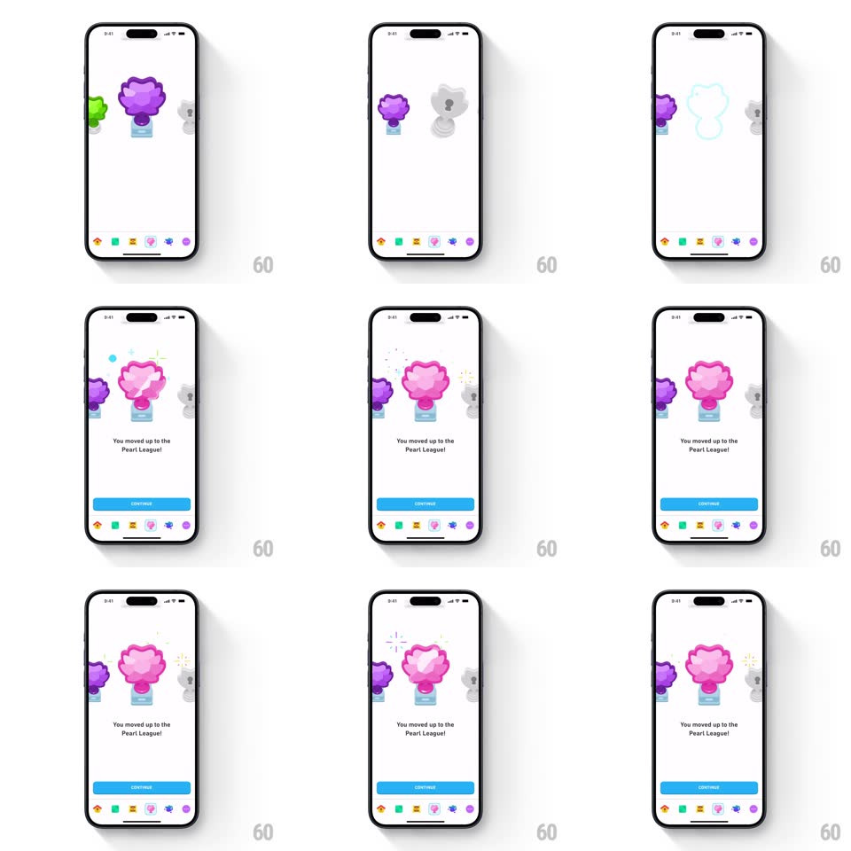

Media
Frame-by-frame

Rebuild this animation 1:1: Duolingo's league promotion reveal - the trophy carousel slides left, the new Pearl League trophy springs into center stage, and star confetti pops as "You moved up to the Pearl League!" fades in.

Rebuild this animation 1:1: Duolingo's league promotion reveal - the trophy carousel slides left, the new Pearl League trophy springs into center stage, and star confetti pops as "You moved up to the Pearl League!" fades in.
## Integration
Integration: stack-agnostic spec - springs given as stiffness/damping, timed motions as duration + curve; map every value to your framework and animation library of choice.
## Scene
A results card ("Congratulations! You finished #2 last week.") with a leaderboard and a blue Continue button collapses into a white stage holding three trophy pedestals: the previous league trophy (green), the earned trophy (purple, center), and a locked grey trophy ahead.
## Motion spec
Pattern: carousel slide + springy scale-up reveal, ~1.8s.
- Slide: the trophy row translates left one slot (350ms, ease-out) - the earned purple trophy exits left while the new pink Pearl trophy enters from the right into center; the grey locked trophy shifts left beside it.
- Reveal: the Pearl trophy scales from 0.6 to 1.15 to 1 (spring ~260/14, 500ms) with a slight rotation settle.
- Confetti: a single burst of star confetti (12-16 pieces, radial spread ~140px) fires from the trophy's top at the peak of the scale-up; pieces fall with gravity and fade out over 700ms.
- Copy: "You moved up to the Pearl League!" fades in below (250ms, 200ms after the trophy lands) and the Continue button fades in last (200ms).
## Calibration
- The trophy row slide and the trophy scale-up overlap: the scale begins as the slide ends.
- Confetti fires once, at the apex, not continuously.
## Reduced motion
Skip confetti; trophy fades into place without scale overshoot.
## Don't miss
- The locked grey trophy stays desaturated and never animates beyond the slide.
- Text and button stagger in after the trophy settles, not during it.